祭祀公業法制研究
派下員大會決議之效力分析
證明書被撤銷之後：五個程序裂縫與三種決議效力
謝秉錡律師事務所
2026 年 11 月 ｜ 本簡報之當事人、公業、機關、金額均已去識別化
01
沒有規約，
誰有權召集大會？
02
名冊被撤銷，
多少人算「過半數」？
03
公業還沒解散，
可以把錢分掉嗎？
這三個問題沒有共通的答案，卻共用同一個前提：一份不存在的名冊。
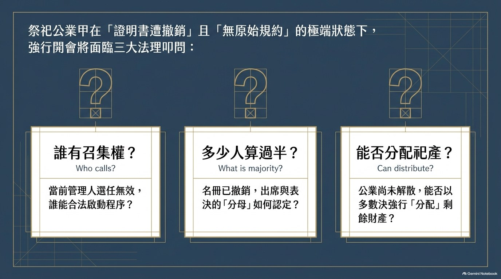
| 常見誤解 | 正確理解 |
|---|---|
| 前管理人說「同意」 就有召集權 | 召集權只能來自法律或規約。他人同意不能創設權源。 |
| 公告期滿無人異議 派下範圍就確定了 | 不爭執的只是「程序曾公告」，不含實體範圍正確。 |
| 先開會、先選人 程序之後再補 | 條例第 6 條至第 16 條是有先後順序的，不能跳級。 |
→ 這三句話，是本案所有爭議的起點。
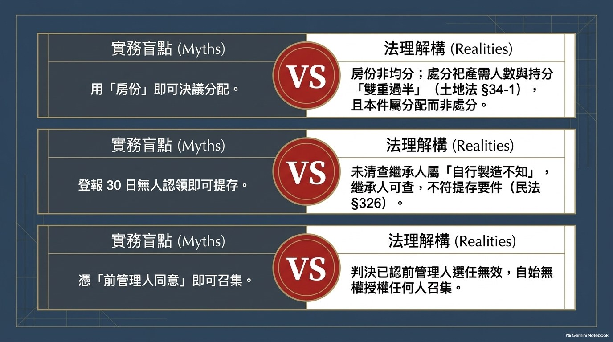
早年
主管機關核發派下全員證明書，名冊僅列第四房
其後
前管理人處分數筆土地，收取價金（未經任何裁判認定）
二審更審
認定五房設立、確認三人派下權、前管理人選任無效
三審
上訴駁回，全案確定
近期
主管機關撤銷派下全員證明書及備查名冊
近期
派下員Ｂ自任召集人，訂 11 月中旬開會
※ 議案為「選任管理人」及「辦理剩餘財產分配」，地點、日期、金額均已模糊化
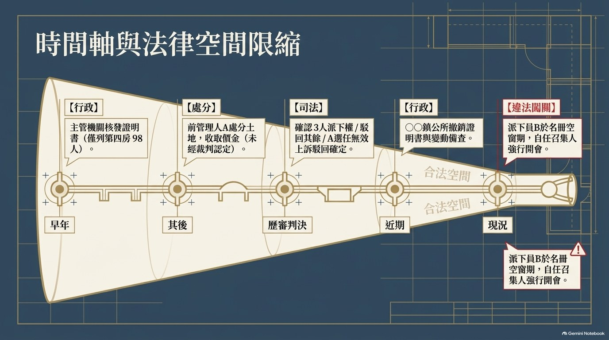
祭祀公業甲
未登記法人・無原始規約
祀產為派下員公同共有
前管理人Ａ
選任經判決認定無效
證明書及備查嗣後被撤銷
派下員Ｂ
派下權經判決確認
以「前管理人同意」自任召集人
派下員Ｃ、Ｄ
派下權經判決確認
（主文僅確認此三人）
派下員Ｅ＋7 人
派下權經判決駁回確定
不得列入名冊
第三人己・Ｆ公司
系爭土地受讓人
買賣移轉經判決認定有效
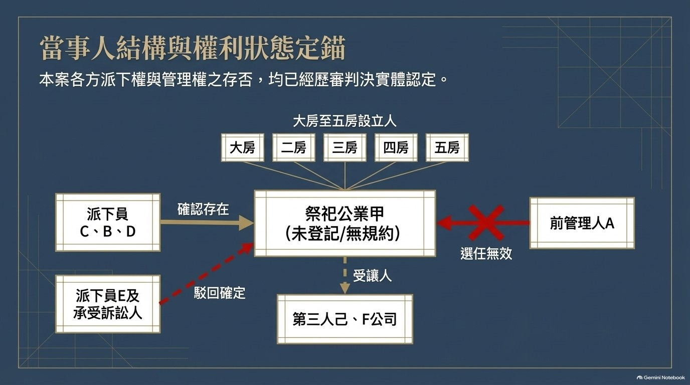
以下五件事，不必再爭。
它們同時也是判斷這場大會是否有效的基礎。
二審更審判決・不爭執事項㈡
「系爭公業無原始規約，其享祀者為某先祖。」
沒有規約
就沒有「召集方式、通知期間」的私法依據
沒有規約
就沒有「出席門檻、表決門檻」的計算基礎
沒有規約
就沒有規約授權的召集人
條例第 30、31 條「由管理人召集」→ 僅適用於已登記之祭祀公業法人，本件不適用。
系爭公業調查書所附設立連名帳記載，設立人為下列五人：
大房
設立人一
二房
設立人二
三房
設立人三
四房
設立人四
五房
設立人五
判決理由：第四房從未被排除
「系爭調查書所附派下系統表，記載某等 5 人……係設立人四之子，且設立人四與其餘 4 位設立人同為設立人。」
→ 名冊之第四房 98 人，判決從未否定其派下權。任何決議若排除該房，即與判決認定衝突。
注意：判決理由另指出，調查書與宗譜就其中二房之房序本有歧異。
主文確認的範圍
Ｃ
派下權存在
Ｂ
派下權存在
Ｄ
派下權存在
其餘上訴駁回 → Ｅ及承受訴訟人 7 人「均非」派下員
判決理由中的「18 人」不是主文範圍
「許吉後代子孫可為派下員者尚有 18 人」——這是被上訴人不爭執的計算基礎，不是主文確認的範圍。任何人都不能拿理由中的 18 人去造名冊。
→ 名冊若填入已被駁回者，即與確定判決直接衝突。
※ 未經主文確認、亦無備查名冊可憑之派下權，其人數無從認定——這是後續所有門檻失效的根源。
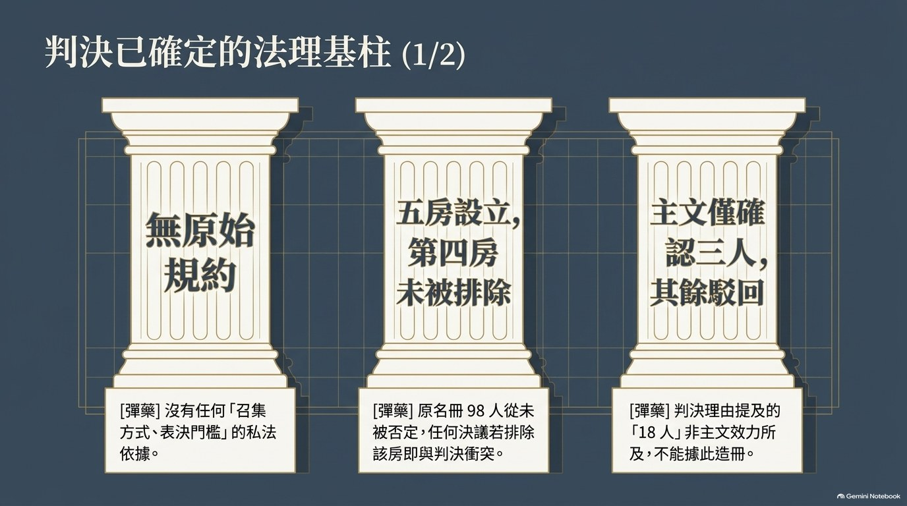
條例第 16 條第 4 項的「過半數」，是全體現員的過半數，不是出席者的過半數。
同意選任前管理人的同意書
53 份
法定門檻（全體 116 人之過半數）
58 人
差 5 份 → 未達門檻
判決用語
「出具同意書同意選任前管理人為管理人者為 53 名，不足半數，與祭祀公業條例第 16 條第 4 項規定未合……前管理人非合法之系爭公業管理人。」（三審裁定亦重申「雖非合法」）
二審更審判決・關於土地法第 34 條之 1
「至上訴人主張土地法第 34 條之 1 部分，與系爭公業處分祀產之情節未符，復不影響上開法規適用之結果，不予贅論。」
這一句話的用途
①
法院已明示：本案情形與該條「情節未符」
②
「不予贅論」＝法院未以該條作為分配依據
③
故「以多數決分配祀產」欠缺裁判支持
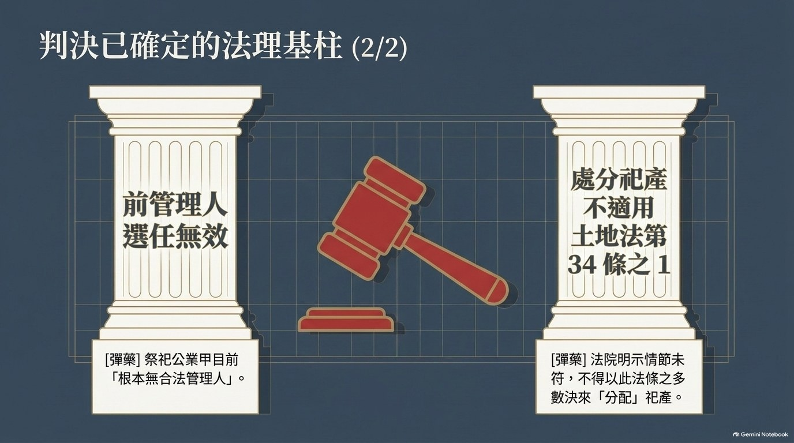
①
無召集權人
條例 §30、§31 不適用本件；無規約；管理人選任無效
②
沒有分母
名冊被撤銷 → 現員總數、過半數、房份比例全部無從認定
③
通知缺口
無發文日期、無通知期間、無名冊、無議案內容
④
提存無據
「報紙 30 日無人認領即提存」與繼承規定、民法 §326 不符
⑤
逾越權限
分配祀產屬分割，須先終止公同關係（§829、§830）
①②③ 針對「會議能不能開」；④⑤ 針對「決議內容能不能成立」。
法律
條例 §30、§31 之召集權人（管理人）僅指已登記之法人
✗ 不適用
規約
本件無原始規約，亦無嗣後訂定之備查紀錄
✗ 不存在
管理人
前管理人選任經判決認定無效，備查亦經撤銷
✗ 資格欠缺
三個來源皆空 → 沒有人有召集權
「前管理人同意由本人擔任召集人」不是召集權的來源，也不能創設召集權。
名冊被撤銷之後，每一個門檻都失去分母。
訂定規約
§14Ⅲ
現員 2/3 出席
出席者 3/4 同意
分母 = ？
選任管理人
§16Ⅳ
全體現員
過半數同意
分母 = ？
處分祀產
§828Ⅲ
§34-1Ⅴ
人數＋潛在
應有部分雙多數
分母 = ？
沒有分母，就沒有多數決；沒有多數決，就沒有決議成立。
逕行表決者，屬法律上不能認為有決議成立，並非單純的程序瑕疵。
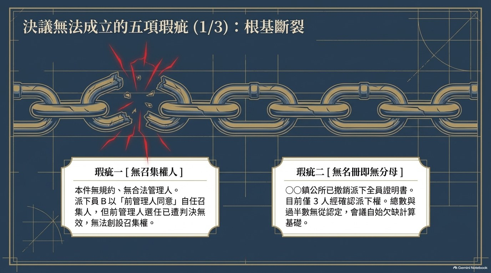
①
無發文日期
無通知期間
亦無規約依據（本件無規約），通知是否合法送達無從認定
②
無派下現員名冊
無資格認定方式
出席者是否具派下員身分，現場無從核對
③
無議案內容
剩餘財產之標的、金額、計算基礎、分配比例全部空白
三者合起來的效果：與會者無法確知「誰有資格出席」「要表決什麼」。
通知書：「……刊登報紙 30 日後如無人認領，將其房份之款項提存法院。」
| 民法 §326 之要件 | 本件情形 | 判斷 |
|---|---|---|
| 債權人受領遲延，或不能確知孰為債權人而難為給付 | 派下員及繼承人均可經戶籍查明 | ✗ 非「不能確知」 |
| 有已確定之債權存在 | 公業未解散、無規約、無合法決議 | ✗ 無債可清償 |
| 依 §34-1 處分後對不同意者之對價補償（執行要點 §11） | 本件無處分、無對價、住址可查 | ✗ 三者皆不符 |
縱經提存所形式准許，依提存法 §22，非依債務本旨之清償提存，債之關係不消滅。
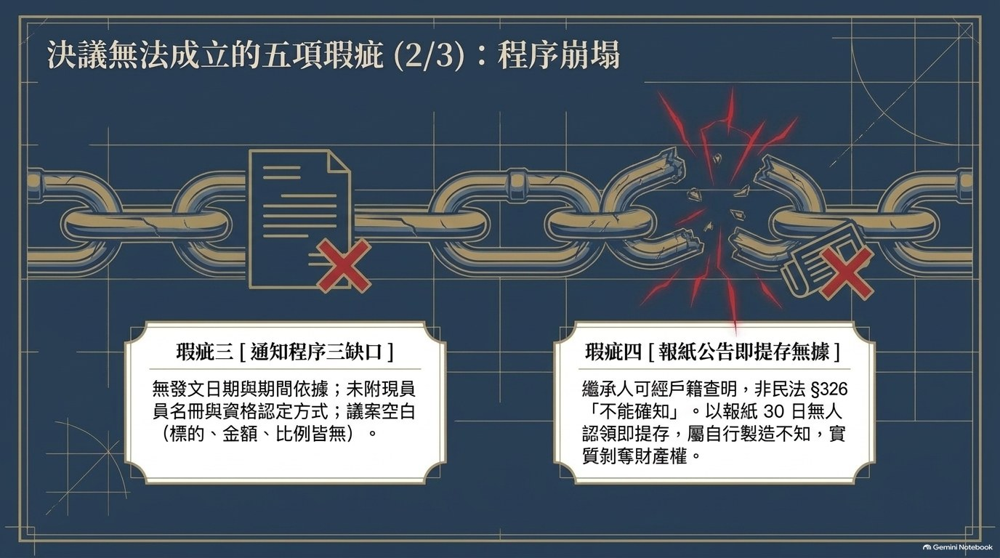
| 項目 | 處分 | 分配 |
|---|---|---|
| 性質 | 處分行為（賣、設定負擔） | 分割（終結公同共有） |
| 依據 | 民法 §828Ⅲ；土地法 §34-1Ⅴ | 民法 §829、§830 |
| 門檻 | 全體同意，或雙重多數 | 須先終止公同關係 |
| 本件 | （前管理人曾處分數筆土地） | ✗ 未解散，不得分配 |
「辦理剩餘財產分配」在法律上屬分割，不是處分。
把分割包裝成分配，是本案議案最根本的定性錯誤。
條例 §15Ⅵ
僅要求規約記載「解散後」財產分配之方式
本件無規約，且公業並未解散
民法 §829
公同關係存續中，不得請求分割公同共有物
公同關係仍存續
民法 §830
須關係終止或讓與後，始得分割
未終止、未讓與
民法 §828Ⅲ
祀產處分應得全體公同共有人同意
無全體同意
四項要件全缺 → 議案內容本身即無實現可能，屬決議內容違反法令而無效。
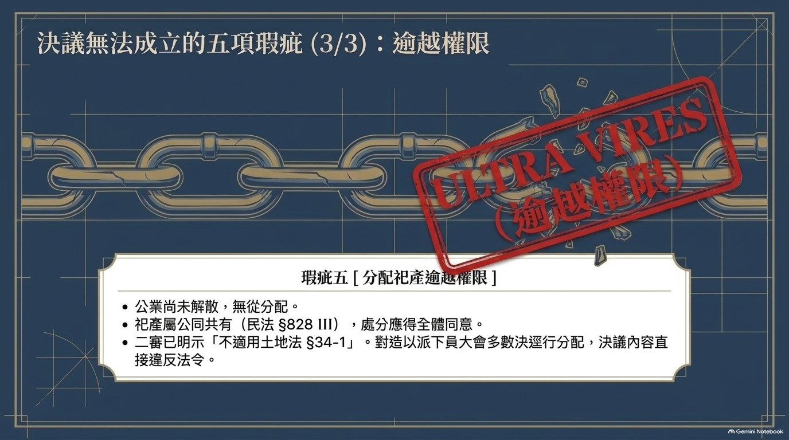
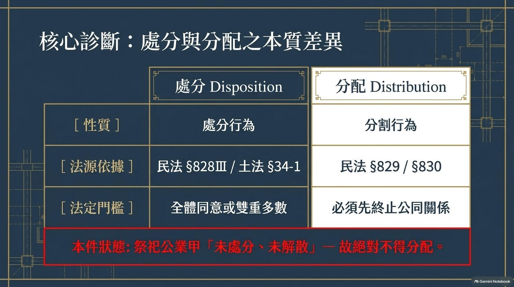
1
重新申報
2
公告異議
3
核發名冊
4
訂定規約
5
選任管理人
6
依規約處分
7
解散
8
分配
↑ 前三步整段跳過
跳過前三步，直接做最後一步 → 順序倒置
最高行政法院 114 上 623：取得派下全員證明書「無從省略此等程序」
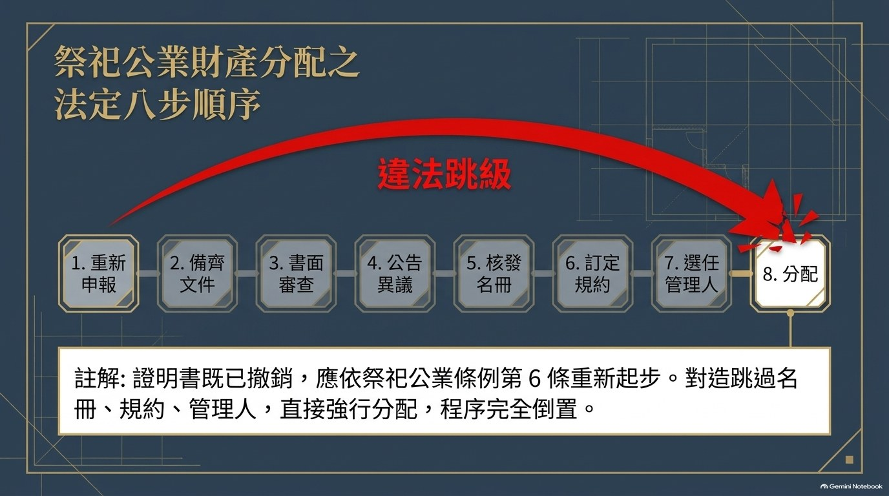
| 瑕疵類型 | 效力 | 期間／限制 |
|---|---|---|
| 決議內容違反法令 | 無效 | 無期間限制 |
| 召集程序或決議方法違法 | 得撤銷 | 決議後 3 個月 出席未當場異議者不得撤銷 |
| 根本無召集權人 | 不成立 | 無期間限制 |
最高法院 114 台上 879
派下員大會決議之性質與社團總會決議相似，可類推適用民法第 56 條；決議內容違反法令者無效。
→ 若議案為「分配剩餘財產」，即落入民法 §829 射程，不受 3 個月限制。
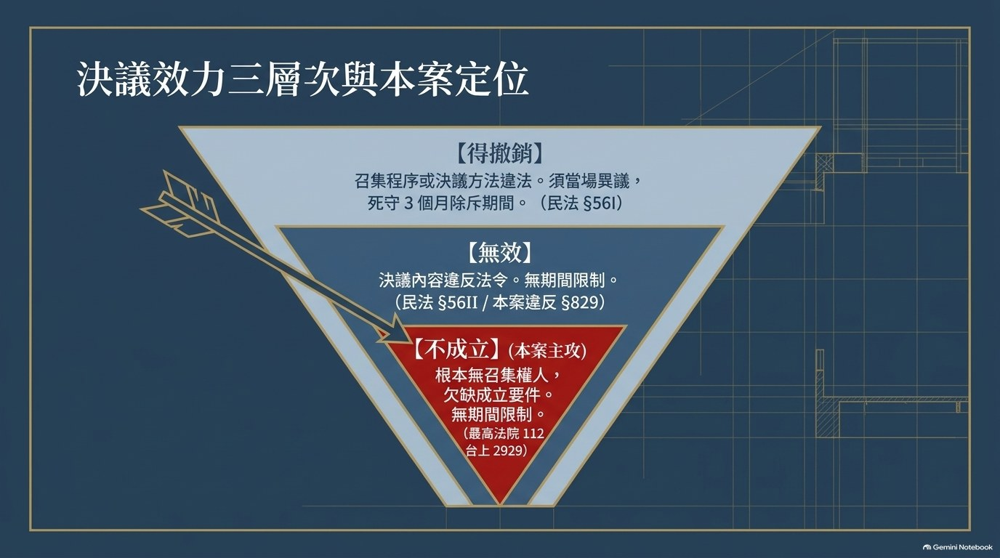
沒有名冊，就沒有分母；
沒有分母，就沒有決議。
名冊不是形式文件，是所有表決門檻的分母來源。
分母不存在，後面的出席、表決、決議，一律無從成立。
下次遇到「公業要開會分財產」，先問這五題。
1
派下全員證明書還在有效狀態嗎？（不在 → 先重新申報）
2
現員名冊從哪裡來？人數與房份比例由誰認定？
3
召集權的依據是法律、規約，還是「某人同意」？
4
議案是「處分」還是「分配」？公同關係終止了嗎？
5
通知有無載明日期、期間、名冊、議案內容？
謝秉錡律師事務所 ｜ 本簡報已去識別化，引用裁判以審級稱之